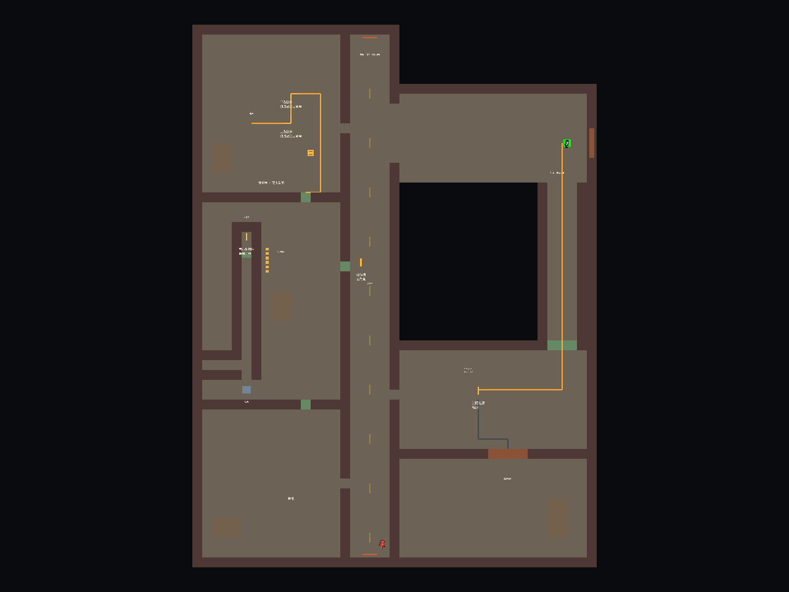
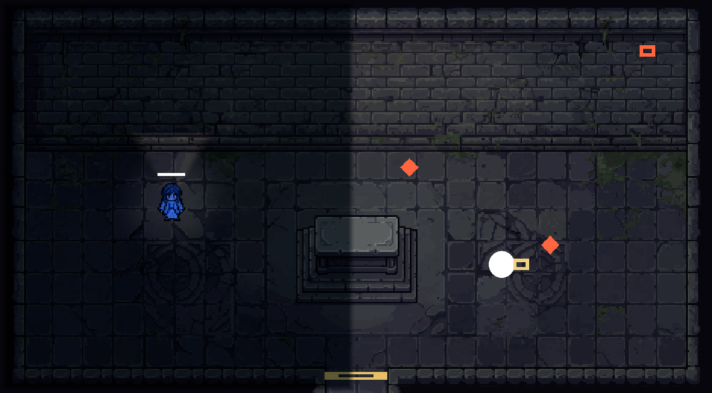
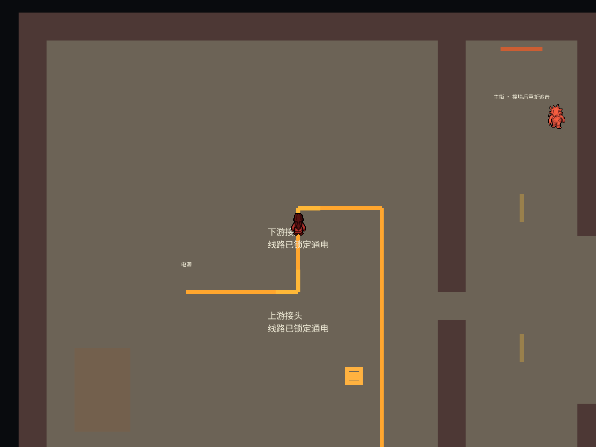
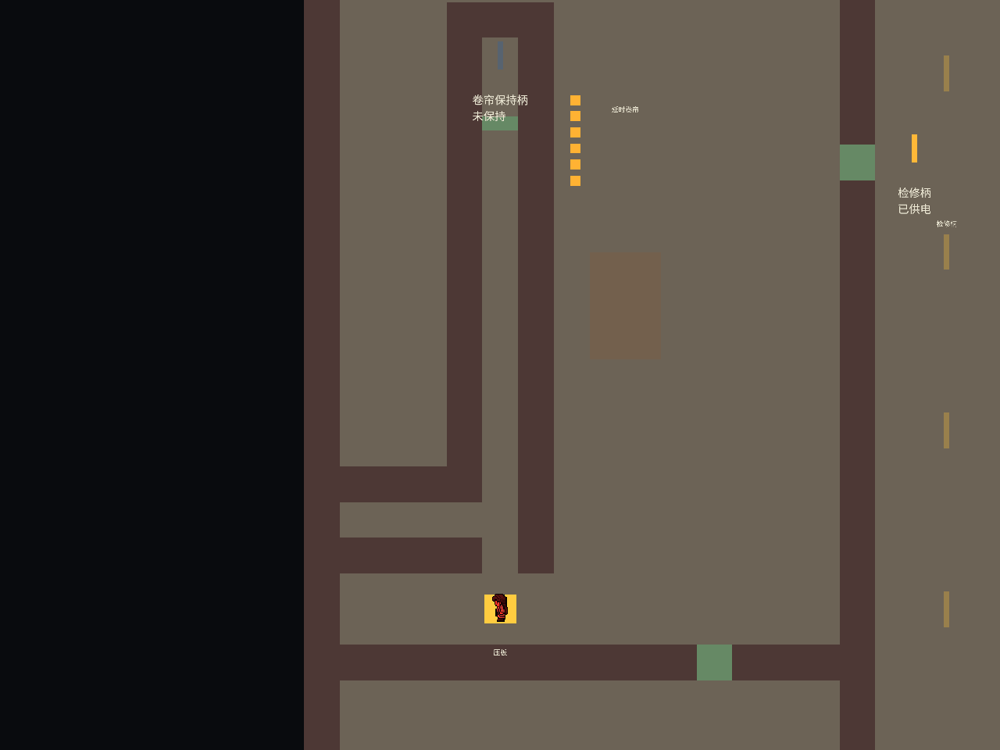
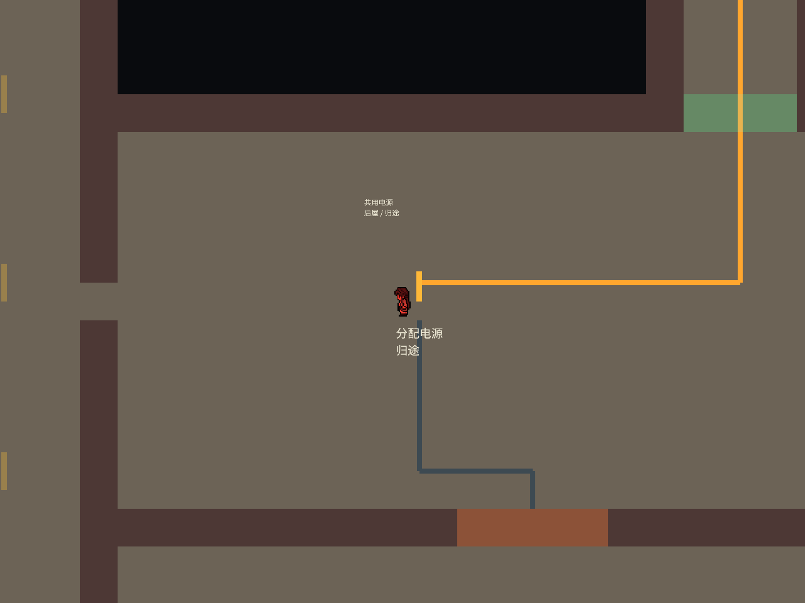
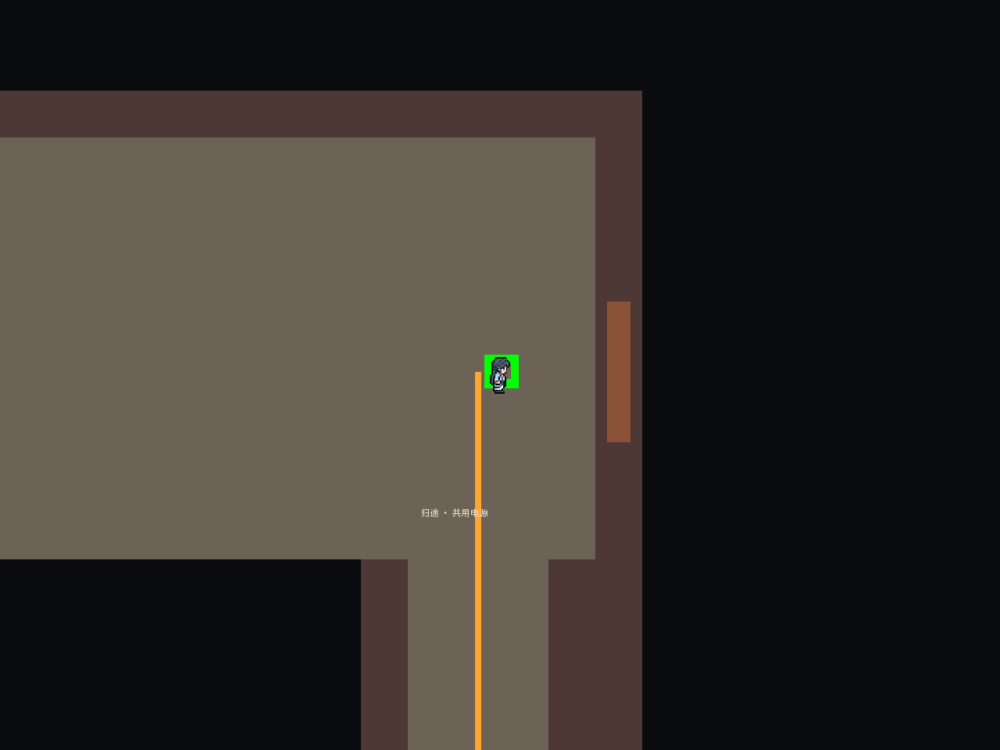

总目录 / Pool
Pool · 2D追逐解谜游戏
在追逐中读懂规则，再利用规则完成解谜。情绪区域改变玩家能力与怪物行为；玩家收集并装备情绪光球，在威胁下操作机关、获取任务物并带回交付。本页展示我设计的背包系统、改造的手电视野，以及正在制作的街道关卡。

一、个人分工
我在团队中担任副策划／副程序，在既有Unity工程上开展系统设计与原型迭代，主要负责以下内容：
- 背包系统设计：细化光球携带与唯一装备、任务物与电闸分类、融合能力条件、冷却、快览、暂停详情及失败反馈，整理为功能与界面说明，并参与实现对接与验证。
- 手电改造：调整黑暗区域的锥形视野、墙体遮光和动态物体显隐；让亮区目标常显，避免玩家处于暗区时，亮区物品和怪物也被手电方向错误隐藏。
- 街道关卡制作：围绕既有怒规则，设计关联谜题、空间路线、操作窗口、失败重试与返程流程，推进可编辑白盒和独立试玩版本。
二、背包系统：让携带、装备与使用规则一致
背包需要同时支持实时追逐与信息查看。设计重点是让物品类别、装备状态、能力条件和失败原因在操作与显示上保持一致。
- 分类管理：最多携带4个情绪光球，只装备1个；任务物使用独立格数；电闸保存完成记录，不占携带格。
- 能力约束：怒球在怒区触发锁向冲锋，哀球在哀区提供透视；冷却按能力类型共享，换同类光球不能绕过冷却。
- 两种查看方式：Tab快览保持世界运行；Esc详情暂停世界并阻断玩法输入。查看详情与实际装备分开处理。
- 边界与恢复：拾取校验距离、遮挡、容量及状态；重复收集不重复计数。被捕恢复与完整重开分别定义保留和清空范围。
三、手电改造：视野限制服务于探索
在哀区演示中，暗处动态物体按手电锥光与墙体遮挡显隐，地形保留可辨认轮廓；亮区中的物品、电闸与怪物保持可见。目标跨越明暗边界时，显示状态随所在位置切换。

四、街道关卡：4道关联谜题与返程
一个怪物持续追击玩家，起冲后锁定直线，碰墙后重新选择追击方向。玩家利用可观察的行为和机关状态完成目标，机关操作后保留相应进度。
| 谜题 | 玩家需要理解的关系 | 结果与反馈 |
|---|---|---|
| 接通维修铺 | 旋转两只L形接头，让电源与下游线路相接 | 电流只亮到实际断点；接通后维修铺卷帘开启 |
| 离岗的追击者 | 用站位影响怪物下一次起冲方向，再利用锁向窗口接近检修柄 | 手动拉柄恢复压板供电；怪物经过不会自动完成机关 |
| 直线与停点 | 比较奔跑与冲锋，选择连续直线和撞停后的安全位置 | 通过延时卷帘，撞停恢复后操作保持柄；错误转角可返回重试 |
| 取物与归途 | 同一电源只维持一个输出，取钥匙后回前厅切换归途供电 | 门体与路线随供电改变；新路线也对怪物开放，回中心E交付才计入1/5 |




失败可重试；被捕后保留已完成的线路、永久开门、供电档位和任务物，临时压板计时复位。连续3次实验失败后可按H查看提示，完整重开清空本关进度。
五、交付与验证范围
- 已交付：Unity可编辑街道场景、独立Windows试玩包、谜题设计卡、功能与路线检查记录、玩家测试表。
- 已有自动验证：街道v3的72项功能／输入／物理／重开检查，以及55项怪物全程启用的取物返程检查通过。已知解法路线零被捕。
- 开发中：五个地点已有独立场景与连续通行框架，其他区域目标尚未与街道切片整合；不能将五区空间框架写成完整五区游戏。
- 待玩家验证：首次10–15分钟体验是设计目标，尚无未读文档玩家测试结果。自动通关只证明流程可完成，不证明谜题可读性、恐怖氛围或最终体验质量。
这些数字来自已保存的原型检查记录。验证说明与复现方式 · 72项功能检查 · 55项持续追击检查
六、设计与验证材料
- 项目GDD v0.4.2（Word）：团队项目规则基线，部分机制仍待定；具体演示参数以当前功能说明为准。
- 背包功能说明与界面说明：存放、拾取、装备、能力、暂停与恢复规则。
- 手电v2.1改造说明：明暗区域、遮挡、显隐与验证范围。
- 街道v3设计与谜题卡：目标、证据、阻碍、推理、实验、失败反馈和规则迁移。
- 街道验证记录与陌生玩家测试表：区分流程可完成性与玩家理解验证。